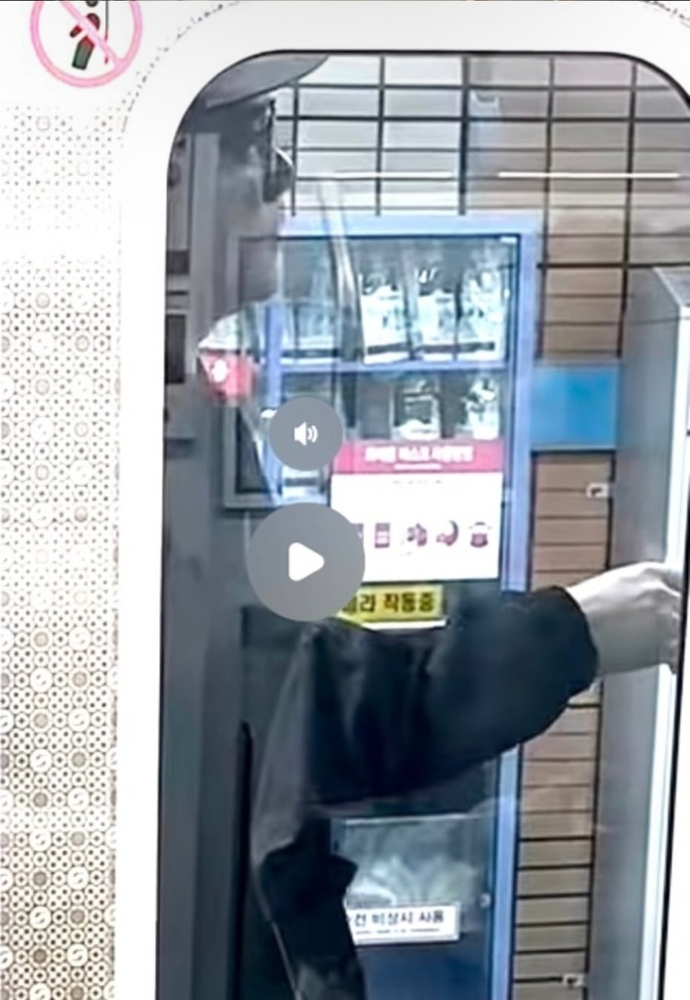

기관사님 개빡침

안태워주니까 당당하게 막기
기관사님 개빡침

안태워주니까 당당하게 막기
철도안전법으로 처벌 ㄱㄱ
서울에 인간들이 하도 많으니까 벌래들도 인간행세를 하고 다니는거제
저정도로 빌런이 되기까지 얼마나 벌레짓을 주변에 해왔을까
주변사람들이 참 고생이겠다
저러면 해당 역 역무원한테 연락해서 못하게 막을텐데 그냥 소리만 지르네
마지막에 온거 아님 ?
4호선 기관사들도 개판임
KTX 막차타고 집 돌아가야하는 상황이고
4호선 타고 서울역 가려던중이었음. 근데 열차 한대가 패스하고 (그냥 안옴)예정시간보다 20분 후에 옴.
그나마 이거 타면 KTX 아슬아슬하게 탈수는 있어서 탔는데
가던중 중간즘 (아마 혜화역즘) 에서 문이 진짜 0.8초정도 열렸다가 다 열리지도 않고 다시 닫히는거임
그 사이에 사람이 끼었음. 거기다 스크린도어는 이미 닫히고 진짜 큰일날 상황이었음.
사람들이 보고서 부랴부랴 문열고 출발하지 말라고 응급 무전기 꺼내고 개난리가 남
결국 1분만에 문이 살짝 열리면서 사람은 빠져나오고, 다시 문이 전부 다 열리면서 한 15분?을 정차해있는거
왜케 안가냐 하면서 기다리는데
역무원 오더니 "아니 누가 비상버튼을 누른거에요?! 비상버튼으로 장난치니까 못가죠!!" 같은 개소릴 그 칸 다들으라고 소리치는거
사람들 개빡쳐서 "씨발 그럼 사람이 끼었는데 이새끼들아 뭐하자는거냐 어쩌구저쩌구" 하면서 개판오분전이다가
그 역무원은 뻘쭘했는지 그 비상무전기 들었던사람 째려보더니 사라짐
그리고서 10분을 더 정차해있다가 출발함
서울역 도착하고나서 풀스프린트로 역에 들어갔는데 KTX가 눈앞에서 지나가더라...
나와서 매표소에서 "4호선 늦은것땜에 못탔습니다.. 환불이라도 해주세요.. 내일 아침에 가게..." 하니까, 만약 진짜 4호선이 늦어서 그런거라면 100%환불이 된다길래 기대감을 안고 기다려봤음. 확인해본다고 잠깐 사라짐
근데 돌아와서 이야기하는게 "4호선쪽에 연락해봤는데 오늘내로 장시간 정차나 비상상황같은건 하나도 일어나지 않았다고 합니다" 라는거
ㄹㅇ 개좆같은날이다 하고서 30%인가 40%? 수수료 내고 환불받음
4호선은 경춘선 가는길을 지하철이 다가다보니 1호선 뺨때리는 좆같은 시간분배때문에 문제가 큰거같다
그거 민원넣으면뎀
완전 외근 추가근무에 풀스프린트까지 뛰어버려서 그자리에서도 따질 기력도 없어서 "걍 그럼 그대로 환불해주세요.." 하고 말았음
KTX 매표직원이 날 바라보는 표정이 "아이구 존나게 딱한 청년일세.." 같은 표정인게 아직도 잊혀지지 않음..
내 말은 믿는데 어떻게 해줄수가 없는 그 표정 ㅋㅋㅋ
4호선 빌런 글에, 이딴 댓글은 왜 다는거지?
내가 이런 일이 있었으니 공감해
그렇다. 4호선은 쟤나 여나 다 빌런이니 공감해 라는 뜻이다.
시발 노친네가 지팡이로 꾸역꾸역 들어가려고 지팡이로 지하철 문 사이에 넣었는데 그게.감지되냐. 스크린도어 사각지대에서. 병신놈. 지팡이 부러진거 실시간으로 보고 쾌재부름
대가리에 쓰고있는거 금장 아디다스 아님? 할배 아닌거 같은데